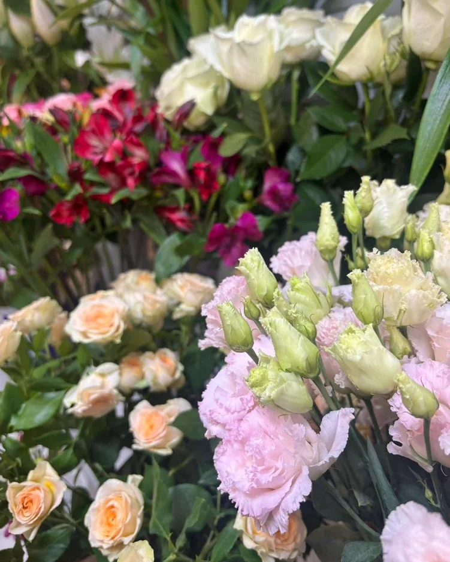
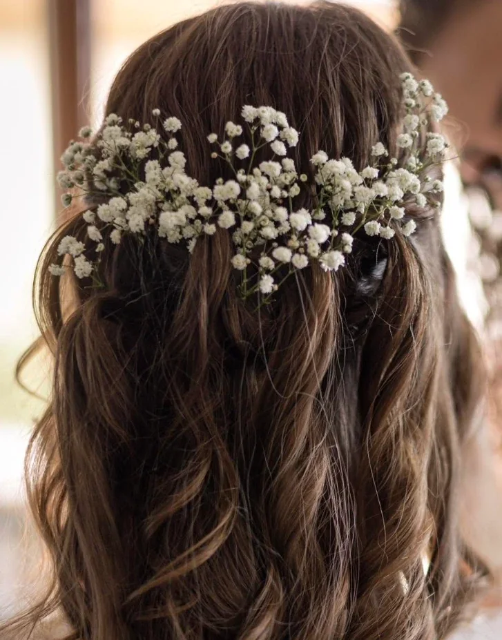
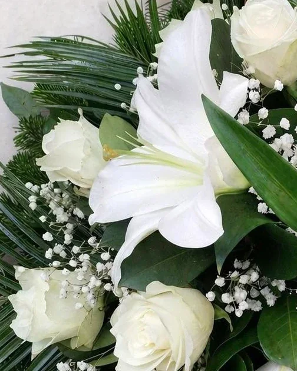

Csokor

01
Kerti csokor
Laza, természetes kötés szezonális virágokból és friss zöldekből.
Virágüzlet · Budapest XVIII.
Kézzel kötött csokrok, szezonális virágok és gondosan megtervezett alkalmi kötészet – a Florea virágüzletből, szeretettel.

01 — A bolt
A Florea virágüzletben minden csokor kézzel, egyedileg készül. Szezonális virágokból dolgozunk, és a kötésnél az alkalmat, a megajándékozott személyiségét és az Ön elképzelését tartjuk szem előtt.
Legyen szó egyetlen szál rózsáról, egy születésnapi csokorról vagy egy teljes esküvői dekorációról – ugyanazzal a gondossággal válogatjuk és kötjük a virágot.

Az évszak legszebb, éppen elérhető virágaiból dolgozunk.
Nincs két egyforma csokor – mindegyik az alkalomhoz készül.
Segítünk kiválasztani a virágot, a színt és a stílust.
02 — Kollekció
Laza, természetes kötés szezonális virágokból és friss zöldekből.

Lágy, púderes árnyalatok romantikus pillanatokra – vázában is.
A kötő szabad keze: a nap legszebb virágaiból, minden darab egyedi.

Rózsa, liziantusz, alstroemeria és a szezon kedvencei – szálanként is.
Letisztult, elegáns forma – akár egyetlen szálban is.
Az esküvő stílusához tervezve, személyes egyeztetés alapján.

Fátyolvirág a hajban – könnyed, romantikus esküvői részlet.

Ajtódísz és szezonális koszorú – élő és szárított virágból.

Sírcsokor és koszorú fehér liliommal, rózsával – méltó, csendes búcsú.
A kínálat a szezontól függően változik – érdeklődjön bátran az aktuális virágokról.
03 — Alkalmak
Vidám, színes csokrok, amelyek mosolyt csalnak az arcra.
Rózsák és romantikus kötések – szavak helyett.
Menyasszonyi csokor, kitűzők, asztaldísz – egységes stílusban.
Anyák napja, nőnap, ballagás, Valentin-nap és karácsony.
Irodai virágok, rendezvénydekoráció, céges ajándékok.
Koszorúk és sírcsokrok – méltó, csendes búcsú.
05 — Rendelés
Telefonon, üzenetben vagy személyesen a boltban.
Alkalom, színek, stílus és keret – együtt kitaláljuk a tökéleteset.
A csokor a megbeszélt időpontra, gondosan becsomagolva várja.
06 — Kapcsolat
A hét minden napján, reggel 7-től este 6-ig nyitva vagyunk. Rendeléssel, kérdéssel vagy csak egy jó ötletért – hívjon, vagy nézzen be hozzánk.